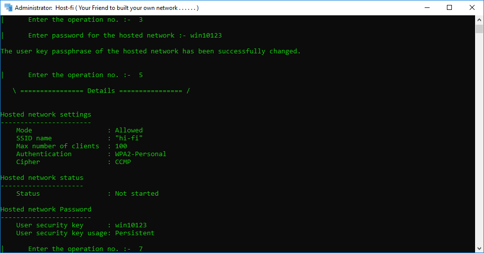

Introduction
The Host-Fi tool is basically used to create a hosted network ( Hotspot ) in the Windows operating system. This tool can create a Virtual hosted network. And with the help of this we can easily establish a good connection with password security. This hosted network is virtual and It's settings are totally isolated, means that this hosted network ( Which is created by Host-Fi tool ) settings are not effect the actual in-built Hosted network in Windows operating system. This tool only use your system hardware Virtually.
Note
This tool is written in batch script. It is very popular scripting language which is used for Windows automation, autotasking and basic Windows customization.
Features
This tool has various types of features. Which are very useful for basic work.
- User friendly interface.
- Connect multiple devices.
- Create a virtual local hosted network.
- Share data easily between devices.
- Easily see the details about the network and connections.
Testing
This Tool Host-Fi is Tested on various versions of Windows. Its is working very efficiently.
This tool is tested on :
- Windows 7 ( New Version )
- Windows 8 ( All Versions )
- Windows 8.1 ( All Versions )
- Windows 10 ( All Versions )
- Windows 11 ( All versions )

Create hosted network
For create the hosted network ( Hotspot ) if it is not configure on your system, Just Right click on the Host-Fi desktop icon and click on ( Run as administrator ) and run it as all system perivilages. When the tool is start and it shows options, Then press 1 on your keyboard and select option number 1 and press Enter. It ask's you to assign a name or SSID for your hosted network which you want to create. Type your SSID for your network and press Enter. The hosted network is created on your Windows operating system.
Note
In this process to perform first task or operation. The tool run a command prompt command by using batch script.
Command
netsh wlan set hostednetwork mode=allow ssid=Name
It run command in background. And by the command it will create a hosted network. Which is totaly isolated to your built-in hosted network.
After create a hotspot. Tool automatic start it, And then it provide you the basic details section about the hotspot. like NameId, password etc.
Start hosted network
For start a hosted network, which is newly create by tool or already created. You just only select option number 2 by press 2 on your keyboard, and press Enter. Now doing this step it will start your hosted network. And now you can connect your devices to your pc or laptop via hotspot.
Note
For Start the hosted network. The tool run a command prompt command by using batch script.
Command
netsh wlan start hostednetwork
This runs a command in background. And by the command it will start a hosted network. Because this command helps us to start the hosted network. which is exist in your operating system.
Set/Change password
This tool is provide you password security or authentication system for your access point. This use WPA2-Personal authentication type for the authentication of your access point ( Hotspot ). This is default type of authentication, which the tool is use.
Note
This tool use a command to set or change the passsword. For this it runs a command in the background. And then the command set the password for your host network.
Command
netsh wlan set hostednetwork key=Password
For set or change the password. First you need to select the option 3 by press 3 on your keyboard, and then press Enter. Next this asks you for password, so just type the password for your access point, and press Enter. Now your Password is set for your hosted network's access point.
Now you can connect devices to the hosted network by fill the password of the access point.
Stop host network
When you want to stop the hosted access point, when you are not using it. So you can also stop it in very easy way into few steps.
For stop the access point of the host network which you create by the tool, you just select the option number 4 by press 4 on your keyboard, and press Enter. Few second later, tool will shows you a stop message. Means the access point or the host network stopped.
Note
This tool use a command to stop the access point. For this it runs a command in the background. And then the command stop the access point or host network.
Command
netsh wlan stop hostednetwork
See details
Some time you want to see the details about your access point and the hosted network, like SSID ( Name of access point ), password, authentication type, status ( on/off ) means your access point is on or off, number of clients connected to your hosted network etc. So by the help of this option you can easily see the specific detail about your access point or hosted network in very easy and formated way.
Note
This tool use a command to stop the access point. For this it runs a command in the background. And then the command stop the access point or host network.
Command
netsh wlan show hostednetwork
netsh wlan show hostednetwork security | findstr User
For see the details about the access point, simply select option number 5 by press 5 on your keyboard and press Enter. Now you can see a list of information which mention in the top of the See details section. This list have the information about the access point or hosted network.
Help for tool
This tool is also provide you the help section. With the help of this help section you can easily understand how this tool works and how to use it. This tool provide your two types of help.
Types of help :-
- Text based help.
- Web based help.
1. Text based help
This type of help provide you command line text help. This help section contains steps. These steps easily define how to use this tool. As shown in image :
For open this help section, you just simply select option number 6 by press 6 on your keyboard and press Enter. you will see a list of help. From there select option number 1 and press Enter. you will see the output as show in image. You can read the steps and go back to the main tool section by select option 4 and press Enter. Now you can use the tool by understand the tool help script.
1. Web based help
This type of help provide you web documentation help. This help section contains a specific help for every option with images. So that's why it is more easy to understand . These section easily define how to use this tool. As shown in image :
For open this help section, you just simply select option number 6 by press 6 on your keyboard and press Enter. You will see a list of help. From there select option number 2 and press Enter. It will open the help documentation on your browser. You will see the output as show in image. Now read the steps and go to the main tool window and select option 4 for go back and press Enter. Now you can use the tool by understand the tool help documentation.
Clear screen
Sometime we want to clear screen. Because the options output make the screen complicate to see the specific line or output. It becomes hard to see the options output. For that reason we need to clear the screen or window of the tool. For do this select the option 7 and press Enter. The tool screen will clear.
Before
After
Exit the tool
When your work will done. You can exit the tool by select the last option by press 99 and press Enter. Few seconds later yor tool will exit or close.